A running record of building Saffron's account-qualification pipeline for the Stable GTM cohort. Each entry says why the step matters, what was done, the evidence, what it told us, and what we decided next.
~54,000
TAM · companies (Prospeo)
~12,000
SAM · companies (Prospeo)
2,921
SOM · companies (Prospeo)
1,005
Clay credits at start
30 / 50
Outreach · 60% pass rate
40
Verified work emails (of 45 eligible)
118.6
Clay credits used, whole pipeline
The brief
Saffron (YC Spring 2026) sells AI-native technical interviews: candidates build a real feature in the hiring company's codebase with Claude Code, and AI reviewers score how they worked. Pricing is self-serve ($199–$499/month), so the best early customers are US tech companies of 50–500 people that hire engineers regularly, where the CTO or VP Engineering can buy without procurement.
The goal of this build is to go from that description to 50 target companies, each qualified as Outreach or Don't outreach with a written reason, while spending as few Clay credits as possible.
Summary
Decisions and deviations
Places where the build differs from the course's default instructions, and why. A reviewer or interviewer will ask about these.
Two list sources instead of three. Apollo rejects gmail sign-ups and needs a company email. We used Prospeo and Clay's company search; Apollo can be added once a work email exists.
Proxies for locked filters. Prospeo's free plan locks Funding, Job Posting and Technologies. Headcount growth stands in for "actively hiring", Engineering department headcount for "has a real engineering team", and founded year for "venture-stage".
Company size narrowed to 50–500 for SOM (the course example used up to 1,000), because Saffron's self-serve pricing fits companies where one engineering leader decides.
For Deepu
Field notes
Small, practical things learned while building. None of this is in the course material, and each one cost time to discover.
Accounts and identity
Data vendors reject free email domains. Apollo returned "You cannot sign up with this email address" for gmail; Ocean.io did the same. A company-domain mailbox is the fix.
Identity platforms stay on your real account. LinkedIn allows one account per person, and a second profile risks restriction; its sign-up for the new gmail simply failed. The post, Sales Navigator and outreach all run from Deepu's own profile. The dedicated gmail is only for tools with credits and trials.
Prospeo
Free plan locks Funding, Job Posting, Technologies and Revenue. Unlocked stand-ins: Headcount by Department (Engineering ≥ 20) for "real engineering team", Headcount Growth for "hiring", Founded Year for "venture-stage".
Results sort by relevance, which favours bigger companies. Page 1 of a 51–500 search was all 250–490 employees. Balance the size mix with a second source or a sort change.
The export is rich (~95 columns): active job count, job titles, last funding round and date, technologies, MX provider, competitors. It's free signal data that can save Clay credits or cross-check Clay's results.
Where things are: the export button is at the far right of the results header, not in the "selected" dropdown (that one only offers selection modes).
Industry filters leak. "Hospitals and Health Care" returns clinics and therapy practices; an engineering-headcount filter removes them.
Clay: finding companies
Clay's raw company data is noisy. With only country, size and industry filters, the top results were media brands, job boards and a competitor.
Clay's search has free signal filters: "people are…" (current employees by title) and "job openings are…" (open roles by title). Using both cut ~31,000 to 196 good-fit companies at zero credit cost.
Job title appears in two filters that ask different questions: employee titles show whether a real engineering team exists; job-opening titles show whether they're hiring now.
Use generic titles with "similar to". Stack-specific titles (SAP, Salesforce, SharePoint Developer) pull in IT-services and non-tech companies.
"Location is United States" means any US office, not HQ. Indian and UK-headquartered companies came through; check the Country column.
Continue → "Save to new workbook and table", not "Save to Companies" (that's an audience list, not a table).
After saving, Clay opens an "Enrich companies" wizard with enrichments pre-ticked. Close it with × to skip; "Save and run 10 rows" would spend credits on a source-only table.
Export lives in Tools → Export tab → Download CSV.
Clay: building the table
There are two auto-run switches. The table-level one is the "Manual/Auto-run" button at the top left. Each enrichment column also has its own Auto-run toggle under Run settings, on by default. Turn it off before saving a new column, or it can run on every row.
Clay formulas are JavaScript expressions. Describe the formula in English and Clay writes JS you can read and edit, e.g. {{Domain}}?.toLowerCase()?.replace(/^https?:\/\//,""). Formulas cost nothing.
Credit prices differ ~10×. From Clay's enrichment picker: Enrich company 0.5/row, Job openings ~0.5/row, Research ICP with AI 0.1/row, Latest funding ~5.7/row, Competitors ~5/row. Keep expensive columns behind run conditions.
The new column panel has "Save and don't run enrichments". Use it, then run 10 rows from the column's header menu.
Clay: enrichments and credits
Billing differs by enrichment. "Find active job openings" and "Find contacts at company" charged only for rows that returned something; "No Job Found", "No Profile Found", invalid-input errors and rows skipped by a run condition were free. The course's "charged per attempt" rule isn't universal, so run 10 rows and check the balance.
"Run empty or out-of-date rows" vs "Force run all". The first skips rows already done; it saved 5 credits when finishing Enrich company after the 10-row test.
Job openings "Limit" only accepts 1–10. Setting 50 errored on every row (free). The limit caps the job records returned, but Job Count still reports the full total (LawnStarter showed 23).
The same signal costs 0.5 to 8 credits a row depending on the provider. Clay's own "Find active job openings" at 0.5 was enough; the waterfall, LeadMagic and TheirStack cost 2–8.
Clay's search and its enrichment disagree. All 32 Clay-sourced companies passed a "5+ engineering openings" search filter, but 11 showed fewer than 5 in the live enrichment. Hugging Face (1,140) and Yuno (1,424) sat in the "51–200" search band. Search narrows; enrichment verifies.
A total job count isn't an engineering job count. Prospeo listed 23 jobs for Sprinto, of which about one was a real software role. Always look at titles.
Clay writes the country as "US". Formulas must compare against "US", not "United States".
Clay: AI columns
Clay defaults to its most expensive model. Helium costs 1 credit, Neon 2, Argon 3, and Argon is labelled "recommended". The Use AI panel quoted ~3.8 a row before switching to Helium.
Use AI → Configure tab gives direct control over use case (Web research / Claygent), model, prompt, outputs and run settings. The Generate tab and the separate "Claygents" page (a standalone agent builder) aren't needed for a table column.
Insert column references with "/". Typed {{Company Name}} stays literal text; the orange "doesn't reference any other columns" warning means the AI would research the placeholder itself.
Typed outputs fix sloppy answers more cheaply than a stronger model. Helium put a sentence where "yes" belonged; switching the field to True/False and describing the tools field fixed it on the same cheap model.
Confidence markers: green = high, orange = medium. Check the evidence URL on orange answers (e.g. ITILITE's came from a job board, not its own site).
Clay: formulas
Test in the formula preview before saving. It showed two bugs in the first generated eligibility formula.
Types bite. The AI field holds the text "true", so == true never matched (in JavaScript "true" == true is false). A 0 stored as a count wasn't caught by !{{Peoplecount}}. Asking Clay to "convert to numbers, treat empty as 0, compare the AI field as text" produced Number(x || 0) and String(x).toLowerCase() === "true".
Lock column names. Clay auto-named the reason column "Staffing Summary"; formulas and conditions reference names, so rename before building on a column, never after.
Clay: people and email
The free plan caps a table at 50 usable rows. The people table received 79 rows but only 50 were usable ("29 more rows available: upgrade"). The Learning Guide says 200. Check limits in the tool itself.
New tables default to Auto-run on. The table created by "Send table data" came up as Auto-run; switch it to Manual before adding paid columns.
"Send table data" is free. Moving each person from a list cell into their own row in another table cost 0 credits, as did "Add to column" for name, title and LinkedIn URL.
Clay auto-names formula columns. The Persona column came out as "Job Seniority", so a typed {{Persona}} in a run condition pointed at nothing and the preview showed "Will not run" on every row. Always insert column references with /, and check "Referenced columns" is not empty.
In Manual mode, run the final waterfall column. Running the first sub-column only ran provider 1. Running the last "Work Email" column ran the whole chain: each provider plus its validation step, stopping at the first valid email.
The cheapest provider did almost all the work. Findymail (first in the waterfall) found 39 of the 40 verified emails; Hunter found 1. The other 9 providers only ran for the 5 hard cases.
Validation keeps bad addresses out. One provider returned an address for Steven Yue (SandboxAQ) that failed validation, so it never reached the final column.
Tune people search with seniority, not just titles. Titles alone returned co-founders, a CEO and a TA coordinator. Removing "Co-Founder" and adding Seniorities (C-Level, Director, Head, Manager, VP) returned the VP and SVP of Engineering. Sales-flavoured titles still slip through ("Sales Engineer", "Field CTO"), so a Persona formula filters them before paying for emails.
Whole-word regex cuts both ways.\bvp\b missed "SVP"; \baccount\b missed "Accounting". The preview caught both.
Judgment calls
Screen every exported list by hand. Filters let through competitors (HackerRank, HackerEarth, micro1, Coffeee.io), services and outsourcing firms (thinkbridge, GoML, Tech9, Particle41, Velozient), a subsidiary (Wing) and possible partners (Workable, Joveo, Sense). Keep each exclusion with its reason.
Rules need a human pass on edge cases. Pinecone (9 SWE openings, 137 employees) failed only because the recruiting-team lookup found nobody, most likely a data gap. Check LinkedIn and override by hand.
HQ location ≠ where the team or buyer sits. Several US-registered companies have engineering mostly in India. They're still valid for Saffron, but location filters don't tell the whole story.
Entries
Build entries
Done
1 · Tool setup and constraints
Context
The course asks for a dedicated workspace so tool credits and trials don't mix with personal accounts (D03–D04).
What we did
A separate Chrome profile signed in as deepshikhagtme@gmail.com, with Prospeo and Clay accounts on it. Bookmarks are grouped by the course's layers (L1 Data, L2 Enrich, L7 AI). LinkedIn and Loom stay on Deepu's existing personal account.
What we learned
Apollo returned "You cannot sign up with this email address" for the gmail. Data vendors screen out free email domains to limit abuse of free credits. Ocean.io did the same in D05–D06.
Decision
Build today with Prospeo + Clay. Add Apollo later through a custom-domain mailbox.
Done
2 · Clay credit budget
Context
Clay charges per attempt, not per success, so a failed lookup still costs. Knowing the budget first decides how many rows each column can run on.
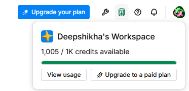
Clay workspace: 1,005 credits available at the start.
What it tells us
Company enrichment, job openings, a team count and one AI research column across 50 rows is roughly 300–400 credits. That leaves room for the Helium vs Neon comparison on the AI column.
Decision
Run every column on all 50 rows, testing on 10 first. Log credits after each AI run for the LinkedIn post.
Done
3 · TAM in Prospeo: ~54,000 companies
Context
TAM (total addressable market) is every company that could in principle buy Saffron: companies that hire software engineers. GTM engineers count it by applying filters in a data tool and reading the result count, and the strategy doc needs the screenshot as evidence (D07–D08).
What we did
Location (company HQ): United States, Canada, United Kingdom, Germany, Netherlands, France
Employee headcount: 51–100 through 2001–5000 (i.e. 51–5,000)
Industry: Software Development; Technology, Information and Internet; Financial Services; Hospitals and Health Care
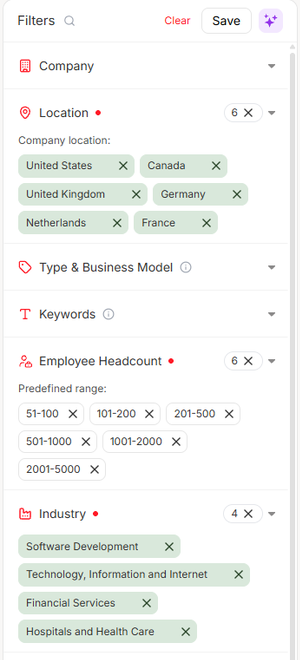
Filters applied.
Result count: about 54,000 companies.
What it tells us
54K is a large but plausible universe, and far too broad to personalize outreach for, which is the point of the next two stages.
The sample rows show noise from the healthcare industry: hospitals and therapy practices appear because "Hospitals and Health Care" includes care providers, not just health-tech companies. They employ few or no software engineers.
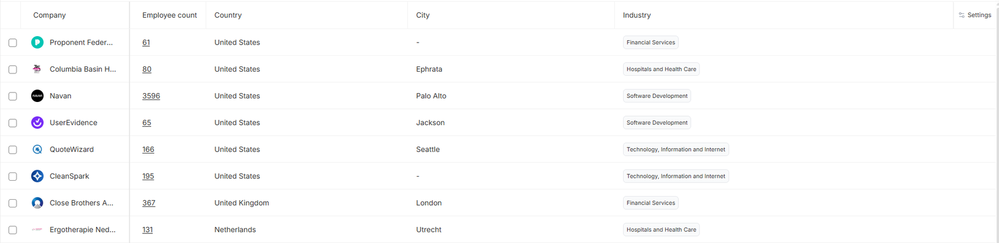
First rows of the TAM results. Rows 2 and 8 (a hospital and an occupational-therapy practice) are not software employers.
Decision
Keep TAM broad, since that's its job. At SAM, add Engineering department headcount ≥ 20, which should remove clinics and keep health-tech, plus headcount growth as the hiring proxy.
Done
4 · SAM in Prospeo: ~12,000 companies
Context
SAM (serviceable addressable market) is the part of TAM that Saffron can actually serve: companies with a real engineering team that are actively hiring. Job Posting is locked on the free plan, so headcount growth stands in for hiring.
What we did
Kept all TAM filters and added:
Headcount by Department → Engineering & Technical: 20 or more
Headcount Growth → at least 1% over the past 6 months
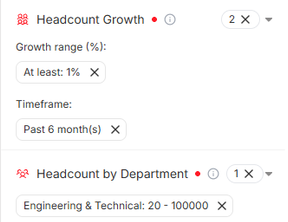
The two filters added for SAM.
Result count: about 12,000 companies (78% fewer than TAM).
What it tells us
The engineering-headcount filter removed the hospitals and clinics; the results are now software, internet and fintech companies that are growing.
HackerRank appears in the results. It's a direct Saffron competitor, so filter-built lists still need a competitor blacklist (D23–D24).
The top results are mostly 2,000–5,000-person companies, too large for Saffron's self-serve pricing.
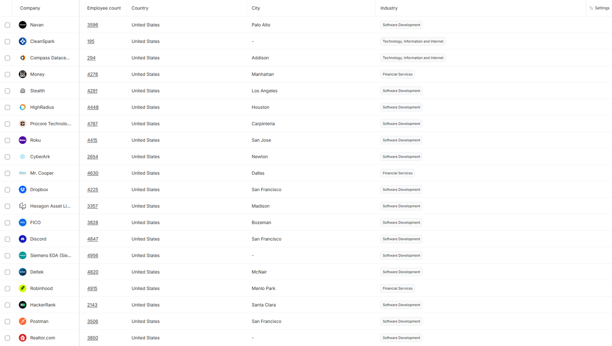
SAM results. Note HackerRank (a competitor) and the large company sizes.
Decision
SOM narrows to US-only, 51–500 employees, founded 2012 or later. Competitors (HackerRank, CodeSignal, Rounds.so, CoderPad, Karat) will be excluded when building the 50-account list.
Done
5 · SOM in Prospeo: 2,921 companies
Context
SOM (serviceable obtainable market) is the slice Saffron can realistically win in the next year. It's partly a filter and partly an argument: a 3-person founding team, self-serve pricing and a single engineering decision maker point to US startups of 50–500 people.
What we did
Kept the SAM filters and changed three:
Location → United States only
Employee headcount → 51–100, 101–200, 201–500
Founded year → 2012 or later (stand-in for venture-stage, since Funding is locked)
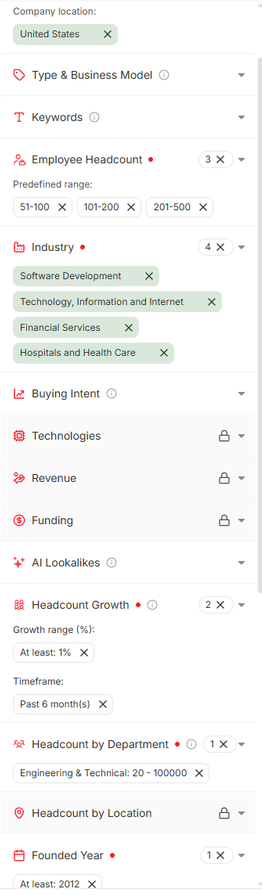
Full SOM filter set.
Result count: 2,921 companies.
What it tells us
Funnel: ~54,000 → ~12,000 → 2,921. SOM is small enough to personalize outreach for and large enough to sustain a year of campaigns.
The first page is mostly right-fit: AI and SaaS companies of 250–500 people with growing engineering teams (Novolo AI, Observe.AI, H2O.ai, AuditBoard, Sprinto).
Three need judgment. Workable (hiring software) is a possible competitor or reseller partner, so it's excluded from outreach. Joveo (recruitment marketing) is a valid target but also a possible partner. Fusemachines is partly an AI services and talent business, which the strategy's disqualifiers cover.
HQ location isn't team location. Several are US-registered with engineering teams mostly in India (e.g. Sprinto, Graphy, SurveySparrow, Signzy). They're still valid, because Saffron's assessments run remotely, but it's a reminder that company location and buyer location differ (D11–D12).
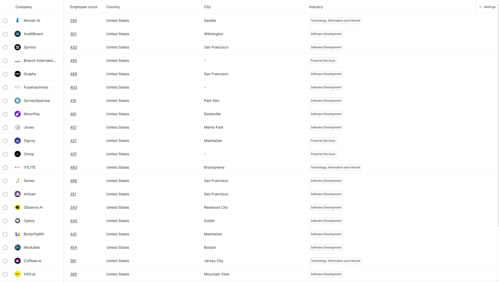
First page of SOM results.
Decision
Take the list sample from these SOM results, excluding Workable and Fusemachines. Add a partners exclusion (other hiring-software vendors) alongside the competitor blacklist in Clay.
Done
6 · The 50-account list
Context
The course's list deliverable (D11–D16) is 50 companies from multiple sources, deduplicated, with only Company Name, Domain and Company LinkedIn URL. Clients usually hand over a bare company list, and everything else gets derived in Clay.
Source 1 · Prospeo (23 exported → 18 kept)
Page 1 of the SOM results, minus Workable and Fusemachines. The export has ~95 columns, including active job count, last funding round, technologies and MX provider, so many signals are available without spending Clay credits. It's kept as a cross-check for Clay's enrichment.
All 23 were 250–490 employees, because Prospeo sorts by relevance and larger companies come first. The second source therefore targeted 51–200.
Excluded on review: Novolo AI (hardware incubator/investor), thinkbridge (outsourced product development), Coffeee.io (sells pre-assessed talent: competitor), Sense and Joveo (recruiting software: partners rather than buyers).
Clay's company search exposes employee-title and job-opening filters for free. These are the two strongest Saffron signals, applied inside the search itself before any enrichment runs (D23–D24):
Country US · 51–200 employees · Software Development + 2 industries · Privately held
At least 20 current employees with software/ML/AI engineering titles
At least 5 open engineering roles (7 titles, "similar to")
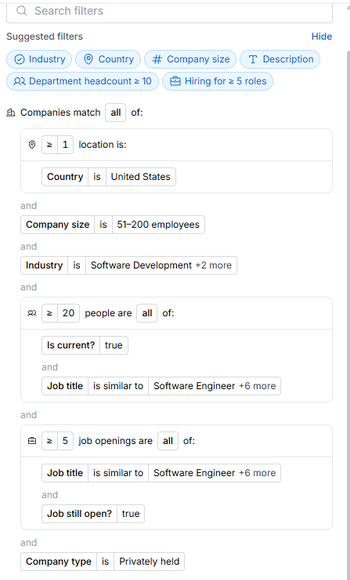
Clay filter set (196 matches; the first 40 were taken).
What it tells us
Without the hiring filters, Clay returned ~31,000 companies, led by media brands (TechCrunch, WIRED), job boards and a competitor (HackerEarth). With them, 196 remained, nearly all AI and SaaS startups that are actively hiring engineers (Pinecone, Deepgram, Gamma, Fireworks AI, AssemblyAI). Clay's raw company data is noisy, as the instructor warned; its value is in the filters.
Clay's "location" filter matches any US office, not only HQ, so two non-US companies came through (Zetheta, India; Prolific, UK). The merge now drops non-US HQs.
Excluded on review: micro1 (competitor: AI interviews), GoML, Tech9, Particle41, Velozient (services/outsourcing), Wing (Alphabet subsidiary).
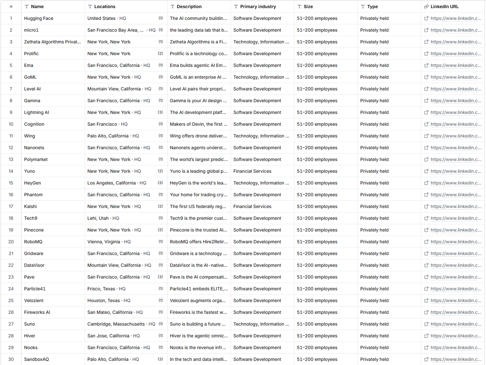
Clay results with the hiring filters applied.
Merge
63 input rows → 11 on the exclusion list, 2 non-US HQ, 0 duplicates → 50 unique companies, 3 columns, no blanks. Every exclusion and its reason is recorded in data/exclude.csv, so the decisions are auditable.
Decision
Import these 50 into Clay as the table to qualify. Expect the Prospeo half (larger, some with few open roles, e.g. Graphy and Branch) to produce most of the "Don't outreach" results, since the Clay half was already filtered on hiring.
Done
7 · Clay: qualify the 50 → 30 Outreach
Context
Each company gets a binary decision, Outreach or Don't outreach, with a written reason (the course's account-scoring rule, D19–D20). Saffron's qualifiers: a real engineering team that is hiring now, a recruiting team that would buy an assessment tool, and a size that fits self-serve pricing. AI-coding-tool adoption lifts companies with only a few openings.
What we built, column by column
Import saffron_50_accounts.csv; table auto-run set to Manual; Clean Domain formula (free, JavaScript generated from plain English).
Enrich company on Clean Domain → Employee Count, Industry, Country, Founded, Type. 10-row test (5 credits), then "run 40 empty rows" (20).
Find active job openings (Clay, 0.5/row): 7 engineering title keywords; excluded Sales, Solutions, Recruiter, Support; limit 10 → Jobcount + one example title. 40 companies had openings; 24 had 5+.
Find contacts at company (Human Resources and Recruiting), matched on Company LinkedIn URL, run only if {{Jobcount}} >= 1 → Peoplecount. 38 of 40 had a recruiting team.
AI Coding Tool Usage: Use AI → Web research (Claygent), Helium, run only if {{Jobcount}} >= 1 && {{Jobcount}} < 5, i.e. the 16 companies where the answer could change the decision. Outputs: ai_tools_mentioned (True/False), tools, evidence_url.
Outreach Eligibility formula and reason formula (Clay named it "Staffing Summary").
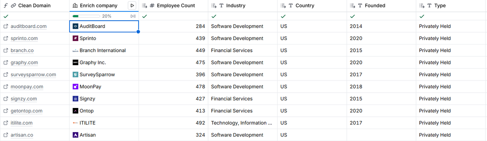
Enrich company on 10 rows (5 credits).
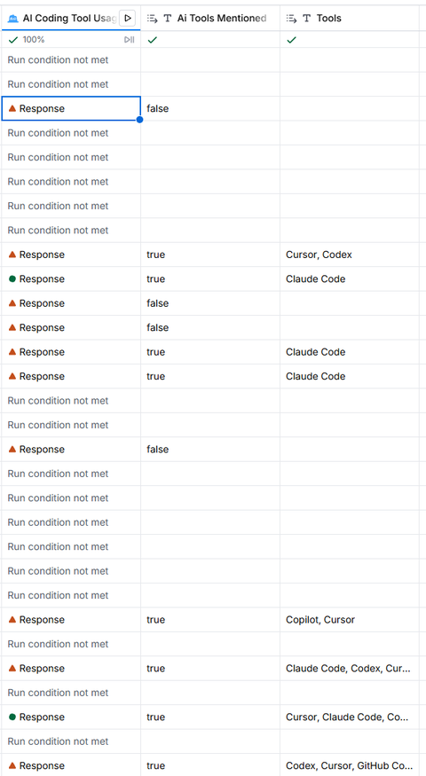
AI column: runs only on 1–4-opening rows; answers split into true/false and tool names.
Credits
Column
Rule
Credits
Clean Domain, Eligibility, Reason
Formulas
0
Enrich company
0.5 × 50 (unrun rows only after the test)
25
Find active job openings
0.5 × 40 hits; misses and errors free
20
Find contacts (recruiting team)
0.5 × 38 hits; skipped rows free
19
AI Coding Tool Usage (Helium)
1 × 16 rows + 3 re-run after the output fix
19
Total
1,005 → 922
83
Clay's default for the AI column was Argon (3 credits, ~3.8 quoted). Argon on all 50 rows would have cost roughly 150–190 credits for that one column. Model choice plus the run condition brought it to 19. The planned Neon comparison was skipped: Helium's only failure was formatting, and fixing the output types solved it without a pricier model.
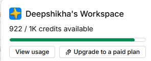
Balance after the full accounts table: 922.
AI results
10 of 16 mention AI coding tools: ITILITE, Artisan, ButterflyMX, H2O.ai, Cognition, Polymarket, HeyGen, Kalshi, Avoma, Rillet. Cursor and Claude Code appear most often, useful framing for Saffron's message. 6 don't: Branch, Observe.AI, Opkey, Bik.ai, Gridware, SuperAnnotate.
First Helium run: Artisan's answer landed in the wrong fields (a sentence instead of "yes"). Setting ai_tools_mentioned to True/False and describing the tools field fixed it; the re-run was clean.
Two formula bugs caught in the preview
1.{{Ai Tools Mentioned}} == true: the column stores the text "true", so every AI-positive company came out Don't outreach. 2.!{{Peoplecount}} didn't catch Pinecone's 0 recruiting team. Rewriting the description ("convert to numbers, treat empty as 0; compare the AI field as text") produced the fixed version.
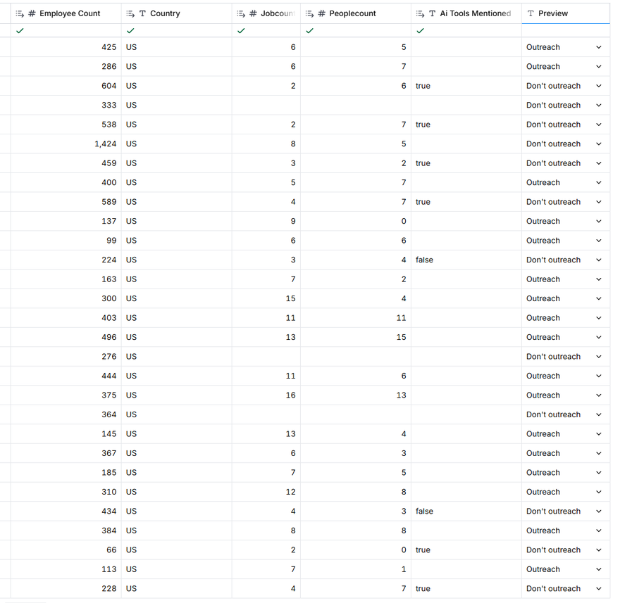
Before: rows with "true" show Don't outreach; row 31 (Pinecone, TA team 0) shows Outreach.
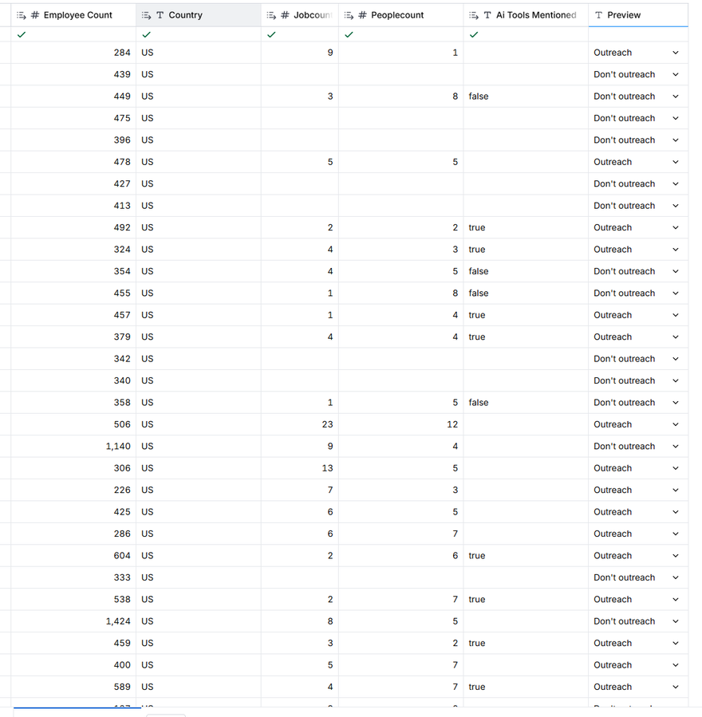
After: AI-positive rows qualify; Pinecone and Avoma don't.
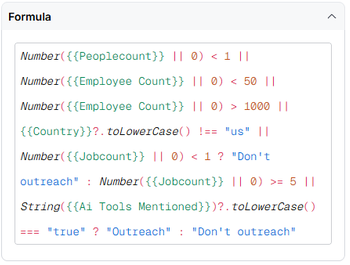
The final eligibility formula.
Result: 30 Outreach, 20 Don't outreach (60%)
60% sits at the bottom of the instructor's healthy 60–70% range. Every row has a reason, e.g. "2 SWE openings · TA team 2 · 492 employees · AI tools: Cursor, Codex" (ITILITE) or "no SWE openings · no TA team · 439 employees" (Sprinto).
Why companies failed: 10 had no engineering openings (7 of them from the Prospeo half); 2 are over 1,000 employees (Hugging Face, Yuno); 6 have 1–4 openings and no AI-tool mention; 2 have no recruiting team found (Pinecone, Avoma).
For manual review: Pinecone (9 SWE openings, 137 employees) most likely has recruiters the lookup missed. Avoma mentions Cursor and Claude Code but has 66 employees and no recruiting team found. Check both on LinkedIn and override if warranted.
Decision
The 30 Outreach companies go to the people table: find decision makers and champions, then work emails and verification. The Prospeo half produced most of the rejections, which supports filtering on hiring signals at the source.
A qualified account is only useful if you can reach the person who buys. For Saffron that's the CTO, VP or Head of Engineering (decision makers) and engineering managers or talent leaders (champions). Emails are found and verified per person, so people need their own table.
What we did
Find people with Surfe's "Find people at company" (0.1 credits per person found), only on the 30 Outreach companies (run condition {{Outreach Eligibility}} == "Outreach"), up to 3 per company. Openmart (1/result) and Pubrio (3/row) would have cost about 90 credits.
Tuned the filters after a 10-row test. The first run returned AuditBoard's co-founder, CEO and a TA coordinator. Removing "Co-Founder" and adding Seniorities C-Level/Director/Head/Manager/VP returned the VP and SVP of Engineering.
Split the lists into rows with "Write each item to new row in other table" → "Send table data" into a new table, Saffron People, carrying 7 company columns (free).
Pulled person fields with "Add to column": Full Name, First Name, Job Title, LinkedIn URL (free).
Persona formula (auto-named "Job Seniority"): blank for sales/account/GTM/field/solutions/customer/marketing titles; Decision maker for CTO, VP/SVP/EVP, chief technology/product, head of engineering or talent; Champion for other engineering/talent/recruiting/director/head titles.
Work email waterfall across 11 providers (Findymail, Hunter, Prospeo, Kitt, Datagma, Wiza, Icypeas, Enrow, Dropcontact, LeadMagic, SMARTe), each with its own validation step, only for Decision makers and Champions.
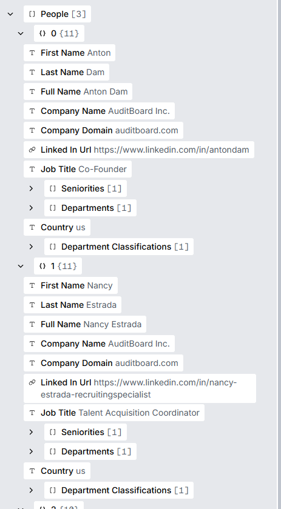
Before tuning: co-founder, TA coordinator, CEO.
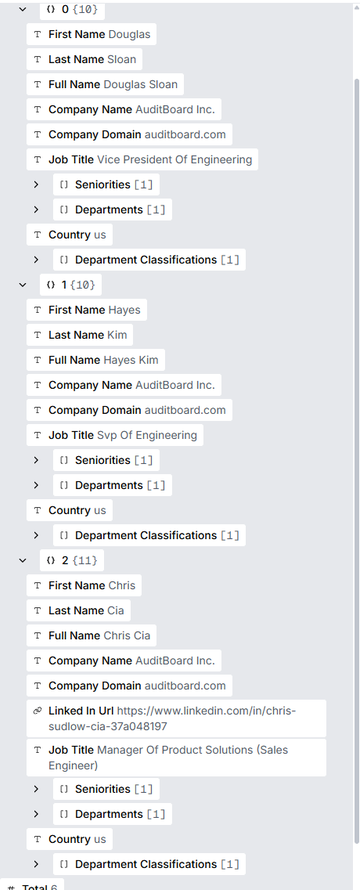
After adding seniorities: VP and SVP of Engineering (plus one sales engineer, filtered later).
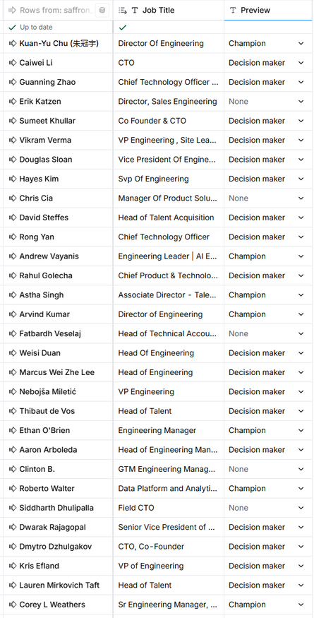
Persona preview. Sales-facing titles (Sales Engineering, Field CTO, GTM, Technical Account) come out as None.
Bugs caught before spending credits
Persona regex: whole-word matching missed "Svp Of Engineering" (came out Champion) and "Head of Technical Accounting" (not excluded). Fixed by treating svp/evp as vp and matching exclusion words anywhere.
Run condition pointed at nothing: it was typed as {{Persona}}, but Clay had named the column "Job Seniority". The preview showed "Will not run" on every row. Re-inserting the column with / fixed it.
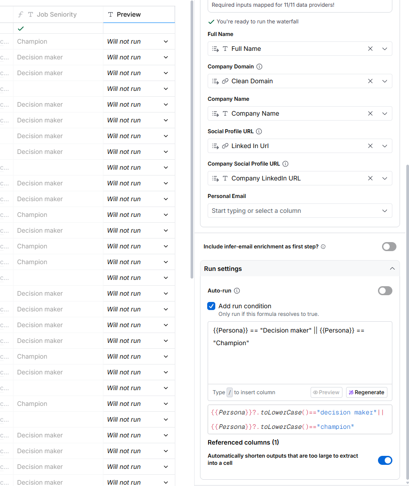
Broken: "Will not run" everywhere.
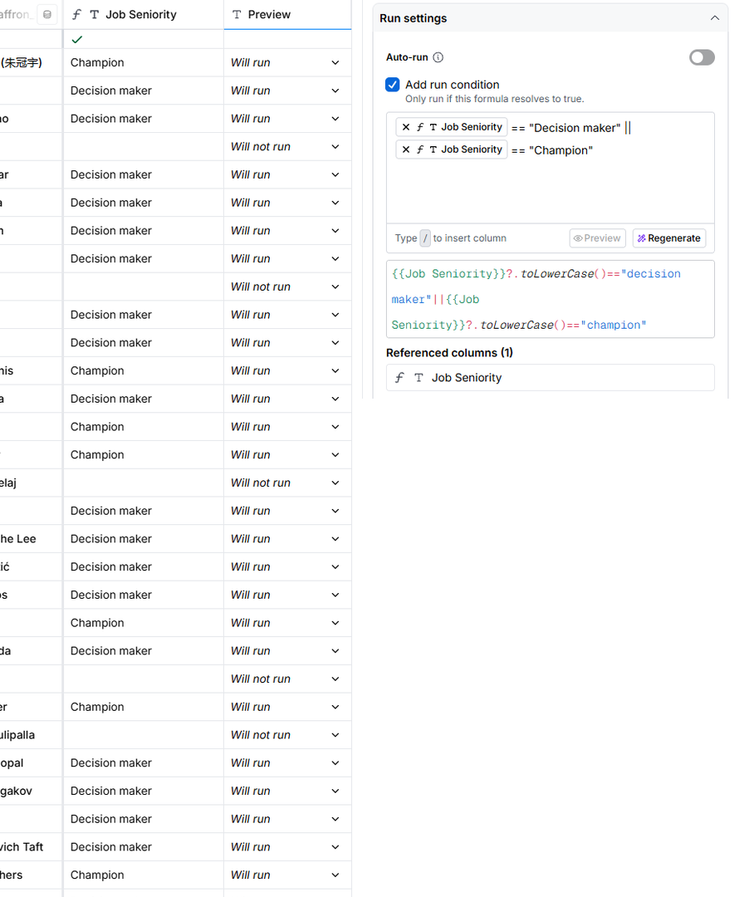
Fixed: runs only for Decision makers and Champions.
Results
27 of 30 Outreach companies returned people (79 in total); Cognition, Polymarket and RoboMQ returned nobody matching. The free plan made only the first 50 rows usable (17 companies).
Of those 50: 5 wrong-fit titles skipped at no cost; 40 verified work emails from 45 eligible (89%). Findymail found 39 and Hunter 1. No provider found an email for Guanning Zhao, Douglas Sloan, Weisi Duan or Nebojša Miletić. Steven Yue's address failed validation and was excluded.
In Manual table mode, running the first sub-column only ran provider 1; running the final "Work Email" column ran the whole chain.
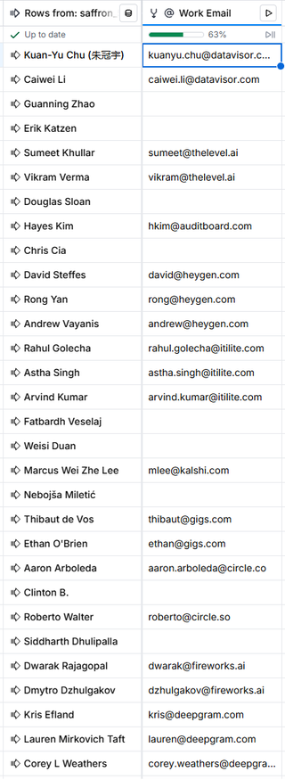
Final Work Email column, rows 1–30.
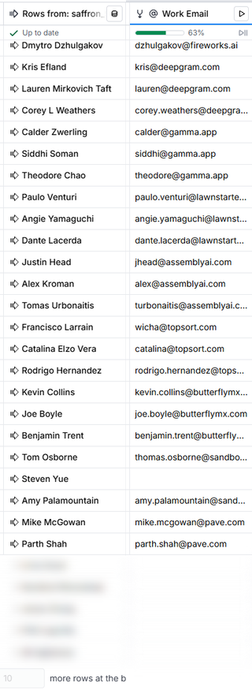
Rows 27–50.
Credits
Step
Credits
People search (two 10-row tests + full run)
9.1
Send table data, Add to column, formulas
0
Email waterfall (10-row test 3.0 + rest 23.5; misses on the first provider were free)
26.5
Accounts table (entry 7)
83
Whole pipeline: 1,005 → 886.4
118.6
Decision
Ship the 40 verified contacts. Everything not reachable by email goes on the Follow-ups tab: LinkedIn outreach for the 5, a next batch of 10 companies beyond the free-plan limit, and 3 companies needing a manual people search. Deviations from the course default: the waterfall's built-in validation was used instead of a separate Enrichly column, and the Mimecast/Proofpoint/Barracuda MX check has not been done; it must happen before any sending.
Done
9 · Deliverable: client delivery sheet
Context
The D23–D24 deliverable is a clean sheet a client could act on: who to contact, why, and how to reach them.
What's in it
Summary: segment, counts, credits used, the qualification rule and the email policy.
Contacts (40): company, person, title, persona, LinkedIn, verified email, which provider found it, the account's qualification reason and AI tools named in its job ads.
Accounts (50): every screened company with its signals, eligibility and reason, colour-coded.
Follow-ups (25): 5 LinkedIn-only contacts, 5 wrong-fit titles, 10 next-batch companies (free-plan limit), 3 companies with no people found, and 2 manual reviews (Pinecone, Avoma).
Where
Google Drive → "GTM Cohort Catch-up" → Saffron - Client Delivery Sheet. Built with data/build_delivery_sheet.py from the two Clay exports.